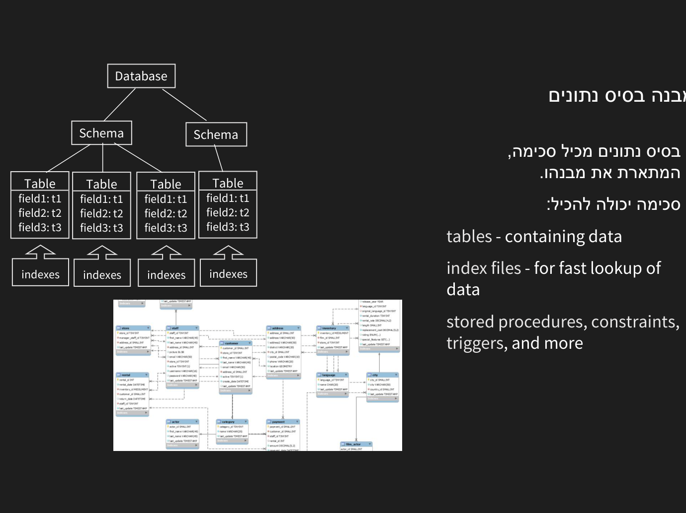

מבוא למסדי נתונים ו-DBMS
⏱ זמן משוער: 30 דק'
מהו מסד נתונים ומהו DBMS
נתחיל בהבחנה מהשיעור: נתונים (Data) הם ערכים גולמיים בלי הקשר — למשל «אורן». מידע (Information) הוא נתונים אחרי עיבוד או בהקשר — «אורן» בתוך העמודה student_name כבר אומר לנו משהו. מסד נתונים מאחסן נתונים בצורה שמאפשרת להפיק מהם מידע.
מסד נתונים (Database) הוא אוסף מאורגן ומתמשך של נתונים קשורים. מערכת ניהול מסד נתונים (DBMS) — למשל MySQL — היא התוכנה שמנהלת את הנתונים: אחסון, שליפה, עדכון, בקרת גישה, גיבוי ושמירה על שלמות. האפליקציה לא ניגשת לקבצים ישירות אלא מבקשת מה-DBMS דרך SQL.
דוגמאות ל-DBMS מהשיעור: MySQL, Oracle, DB2 (IBM), SQL Server ו-Access (Microsoft), PostgreSQL, SQLite — בקורס עובדים עם MySQL.
איך שאילתה מעובדת בתוך ה-DBMS (מהמצגת) — שלושה שלבים:
- ניתוח ותרגום (parsing): ה-parser בודק תחביר ומתרגם את ה-SQL לביטוי פנימי (אלגברה רלציונית).
- אופטימיזציה: ה-optimizer בוחר תוכנית ביצוע יעילה (execution plan) בעזרת סטטיסטיקות על הנתונים.
- הרצה: מנוע הביצוע (execution engine) מריץ את התוכנית על הנתונים ומחזיר את התוצאה.
מקור: db_intro.pdf
למה לא סתם קבצים? (File Processing System)
לפני מסדי נתונים השתמשו במערכת עיבוד קבצים (file processing system): כל אפליקציה (ספרייה, מבחנים, רישום) מגדירה ומנהלת את קבצי הנתונים שלה בנפרד. הבעיות: כפילות (אותו מידע בכמה מקומות), חוסר עקביות (עדכון במקום אחד ולא באחר), קושי בשליפות מורכבות, ובעיות גישה בו-זמנית.
יתרונות מסד הנתונים: גישה יעילה, «עצמאות» ואמינות הנתונים, אבטחה, מבנה ניהול אחיד, גישה מרובת-משתמשים, והתאוששות מתקלה (למשל הפסקת חשמל).
מקור: db_intro.pdf
מבנה והיררכיה: Database ← Schema ← Table

מסד נתונים בנוי בהיררכיה: Database מכיל Schema (המתאר את המבנה), שמכיל Tables (הנתונים עצמם). סכימה יכולה להכיל גם:
- index files — קובצי אינדקס לשליפה מהירה של נתונים.
- stored procedures, constraints, triggers — ועוד אובייקטים שנלמד בהמשך.
מקור: overview.pdf
רלציוני מול NoSQL
הקורס עוסק במסדי נתונים רלציוניים (טבלאות עם סכימה קבועה, קשרים ו-SQL). לצידם קיימים מסדי NoSQL (מסמכים, מפתח-ערך, גרפים) לנתונים לא-מובנים או קנה-מידה עצום. לרוב היישומים העסקיים — הרלציוני עם שלמות ו-SQL הוא ברירת המחדל.
מקור: overview.pdf
הכלים: MySQL ו-Workbench
מסד התרגול של הקורס — sakila: בשיעורים ובתרגילים המרצה עובד על מסד דוגמה מובנה של MySQL בשם sakila — חנות השכרת סרטים. כשתראו באתר או במצגות טבלאות כמו actor, film, film_actor, customer, rental, category — זה משם: שחקנים, סרטים, טבלת הקשר ביניהם, לקוחות והשכרות. פונים אליו עם USE sakila; או בתחביר sakila.film.
MySQL הוא ה-DBMS בקורס — שרת שמאזין לחיבורים ומריץ פקודות SQL. MySQL Workbench הוא כלי גרפי (client) לכתיבת שאילתות, עיצוב סכימה והרצת סקריפטים. מודל לקוח-שרת: ה-Workbench שולח SQL לשרת, שמעבד ומחזיר תוצאות.
מקור: MySQL_Install.pdf
בדיקה עצמית
מהו תפקידו העיקרי של DBMS?
איזו בעיה של אחסון בקבצים נפרדים פותר מסד נתונים?
מה נכון לגבי MySQL?
מהי «עצמאות נתונים» (data independence)?
מתי מסד NoSQL עשוי להתאים יותר מרלציוני?
סיימתם את הפרק? סמנו אותו כהושלם: